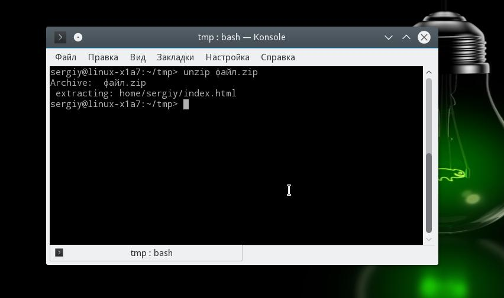
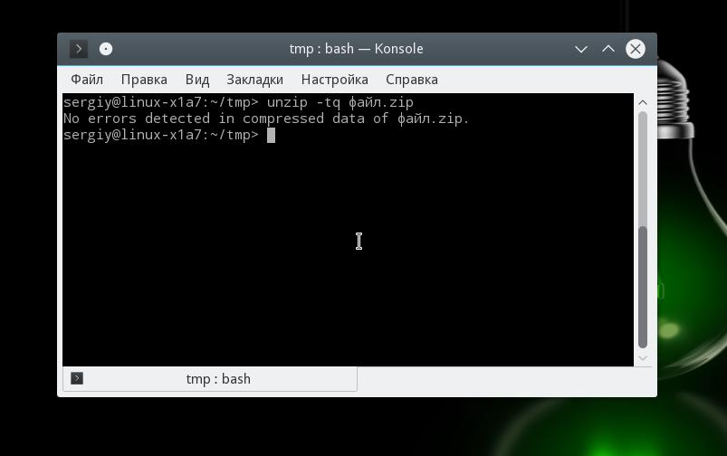

Формат ZIP был создан в 1989 году на замену очень медленному формату ARC. Здесь используется сжатие deflate, и на то время оно работало намного быстрее чем ARC. Исторически сложилось так, что стандартным форматом для Linux стали TAR и GZ - это усовершенствованные алгоритмы сжатия и архивации. Многие графические распаковки воспринимают и ZIP-файлы. Но они обрабатывают архивы не сами, а дают команду предназначенным для этого формата утилитам.
Утилита для распаковки ZIP называется unzip, она не всегда установлена по умолчанию. Но вы можете очень просто добавить её в свою систему из официальных репозиториев. Для этого в Ubuntu выполните:
sudo apt install unzip
А в системах, использующих формат пакетов Red Hat, команда будет выглядеть немного по-другому:
sudo yum install unzip zip
После установки большинство графических утилит для работы с архивами смогут распаковать архив ZIP Linux. Команда ZIP Linux установлена на случай, если вы захотите создавать ZIP-архивы.
Но этой утилите не нужны дополнительные оболочки для распаковки архива. Вы можете сделать всё прямо из консоли. Давайте рассмотрим синтаксис утилиты:
$ unzip опции файл_архива.zip файлы -x исключить -d папка
Теперь рассмотрим опции утилиты, поскольку она позволяет не только распаковывать архивы, но и выполнять с ними определённые действия:
Все самые основные опции рассмотрели, теперь давайте рассмотрим несколько примеров работы с программой в терминале. Чтобы распаковать ZIP Linux в текущую папку, достаточно набрать:
unzip имя_файла

Причём расширение указывать не обязательно. Протестировать архив можно с помощью опции -t:
unzip -tq имя_файла.zip

Вы можете протестировать все архивы в текущей папке, выполнив:
unzip -tq \*.zip